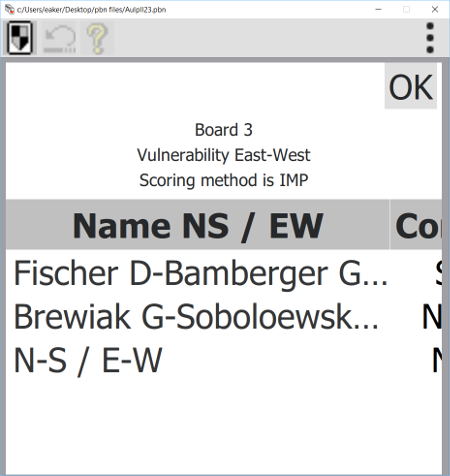
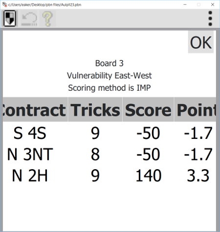

The Score dialogs shows how your scoring has been in the game you are playing.
The dialogs shown below are for International Match Point (IMP) scoring, but they are similar for Match Point (MP) Scoring. To exit from the dialog press the "OK" button
The first level (shown above) shows the played scores for the boards played until now in the game. The "Result" column shows how well this board has been played. For IMP (International Match Point) play the average IMP against the other players is shown. For Match Point (MP) play the average % against the other players is shown. The "All" column shows how well the game has been played until now. For IMP the average for all boards until now is shown. For MP the average % for all boards until now is shown.
If you click in the Board column (the leftmost column) then the play for the board you have chosen will be shown.
You can now examine the bidding and the play step by step for the play you have chosen. In the lower right corner of the window you use the forward and backward buttons for this. If you want to see Double Dummy results for the board then press the button "DD". This will show the Double Dummy results for the board. To exit from the window press the "OK" button.
If you click the Result column for one of the boards in the Played scores dialog then the results for this board will be shown.


This dialog shows how the players has played this board. The Point column shows the scores as explained above for the players from the declarer point of view. If you click the Name column then the play for the Name you have chosen will be shown. Just like it was shown above for your own plays, but now for the players you have chosen. Note however that the PBN files some times only has partially games stored.
If you click the All column in the Played Scores dialog then the summed result until the board you click will be shown.
The dialog shows the players average result compared to the other pairs.
The played score dialog is similar to the one shown for duplicate bridge.
If you click the Board column you will be shown the
play
window as above for duplicate bridge.
Accumulated 100 points are shown
with red in the dialog. If
you click in the NS or EW column the well known We/They score sheet
will be shown.
Sides reaching 100 point score are marked with red. To exit from the score sheet touch somewhere in the sheet.